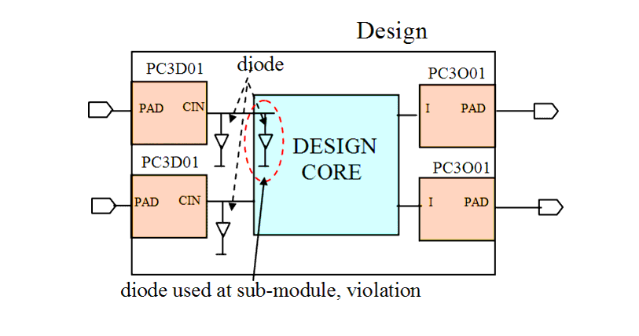

| Description | This rule fires when Leda detects diodes that are not used at the top level in the design. You can use the rule_set_parameter Tcl command and the PROTECTION_DIODE parameter to specify diodes that you want Leda to examine for this rule. The default is null. For example:
leda> rule_set_parameter -rule NTL_CON21 \
-parameter PROTECTION_DIODE -value {DIODE1,\
DIODE2}
If you set this parameter to a list of diodes, Leda checks the specified cells as diodes. When you leave the default setting for this parameter (null), Leda checks cells whose footprint is "antprot" as diodes. |
| Policy | DESIGN |
| Ruleset | CONNECTIVITY |
| Language | VHDL/Verilog |
| Type | Hardware |
| Severity | Warning |
This is an example of invalid Verilog code, followed by a circuit diagram that illustrates the problem:
module ntl_con21_top(Din1_pad, Din2_pad, Dout1_pad,Dout2_pad); input Din1_pad, Din2_pad; output Dout1_pad,Dout2_pad; wire Din1, Din2, Dout1, Dout2; ... Design_core U0 (Din1, Din2, Dout1, Dout2); ... //PAD cells - PC3O01(output pad cell) /PC3D01 (input pad cell) PC3D01 U0 (.PAD(Din1_PAD), .CIN(Din1)); PC3D01 U1 (.PAD(Din2_PAD), .CIN(Din2)); PC3O01 U2 (.I(Dout1), .PAD(Dout1_PAD)); PC3O01 U3 (.I(Dout1), .PAD(Dout1_PAD)); //antpro1 - a diode cell antprot1 I0 (.MINUS(Din1)); antprot1 I1 (.MINUS(Din2)); endmodule module Design_core; input Din1, Din2; ... //antpro1 - a diode cell antprot1 I1 (.MINUS(Din_1)); // NTL_CON21 fires -- violation because this diode is not at top level endmodule